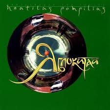

Наутилус Помпилиус
Как-то мне больше нравился живой инструментал, а сейчас Бутусов поёт за Юпитер — такое себе, на самом деле: электронная музыка — уже что-то не то, тк ещё и текста не сравнятся с Кормильцевскими...
Один из первых чудеснейших альбомов — Яблокитай
"Люди на холме" — целый мир
А от "Нежного вампира" я просто таю
Золотой век — сборник лучших песен 1986—1989
Разорваться можно от криков в этой песне
Для меня действительно их «музыка будет вечной»